온프레미스 AI, 공간에 심다
방산·자동차부품 제조사를 위한 온프레미스 sLLM
1단계: 광주(제조AX) → 2단계: 나주(데이터·창업지원) · 목포(워케이션·주거)
모든 AI 연산은 고객의 사업장 내 온프레미스 서버에서 처리됩니다. 클라우드로 전송되는 데이터는 단 하나도 없습니다.
공장 설비·도면·공정 레시피 같은 핵심 기술 자산이 외부로 유출될 경로를 원천 차단합니다.
SW 기술용역과 물리 시공을 분리발주하여고객의 내부 감사 통과를 보장합니다.
※ 물리 시공은 면허 보유 전문 파트너가 발주자와 직접 계약합니다.당사는 시공비를 일괄 도급하지 않으며, SW 기술용역만 직접 수행합니다.
광주 소재 자동차부품 제조사 A — 설비 데이터가 외부 클라우드로 전송되는 것을 방지하고자 온프레미스 AI 도입 검토
→ Core Company sLLM 서버 현장 설치, 기존 PLC 데이터 로컬 처리
ROI: 사례 확보 후 기재
광주 소재 방산 협력사 B — 방위산업기술보호법상 외부 데이터 전송 불가로 온프레미스 전용 AI 필요
→ 완전 망분리 환경에서 sLLM 구축, 외부망 연결 없이 독립 가동
광주 소재 에너지 설비사 C — 레거시 SCADA 데이터를 AI로 분석하되 외부 전송은 불가
→ 온프레미스 sLLM으로 설비 예측 진단, 운영 데이터 사내 보관
환자 데이터 보호 의무가 있는 의료기관 — 클라우드 AI 사용 시 컴플라이언스 이슈
→ 온프레미스 sLLM으로 민감 데이터 외부 유출 없이 AI 진단 보조
※ 고객사명은 비공개 표기. 실제 레퍼런스 게시 전 고객사 승인 필수.
현장 설치형 소형 언어모델로외부망 없이 독립 구동
OPC UA·PLC·SCADA 등레거시 설비와 유연하게 통합
데이터 주권 보장, 물리적 망분리,Rule-based 안전회로 이중화
문의 데이터조차 외부 폼 서비스를 거치지 않습니다 — 직접 이메일로 받습니다.
영업일 1일 이내 응답 보장
개인정보처리방침 전문 보기 →
문의 접수 후 영업일 1일 이내 답변
유선 상담으로 현황 파악
현장 실사 후 맞춤 제안
연락처
전화: 0507-1401-5128이메일: contact@corecompany.com